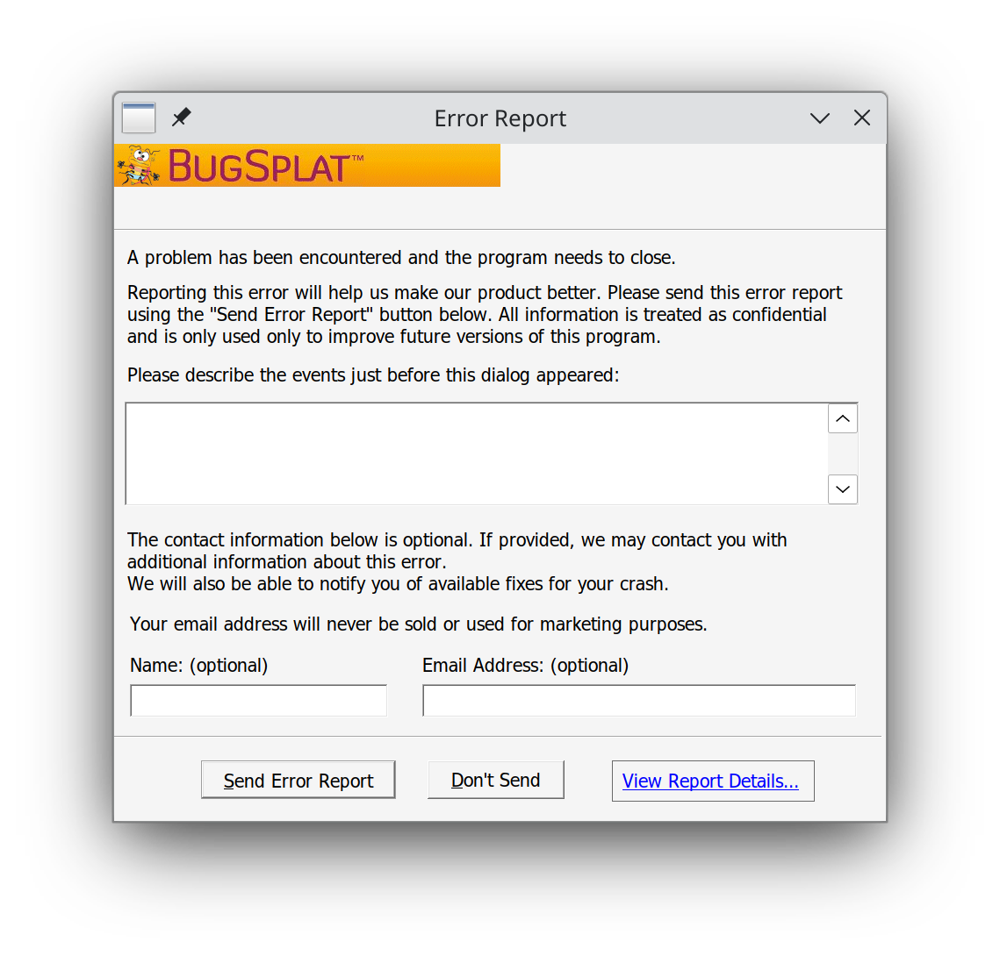
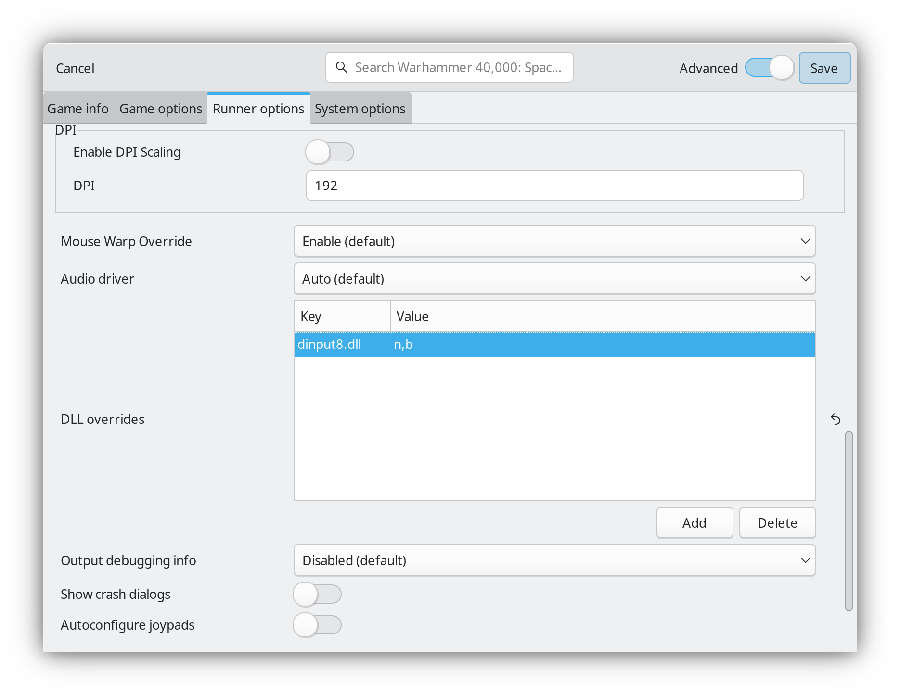
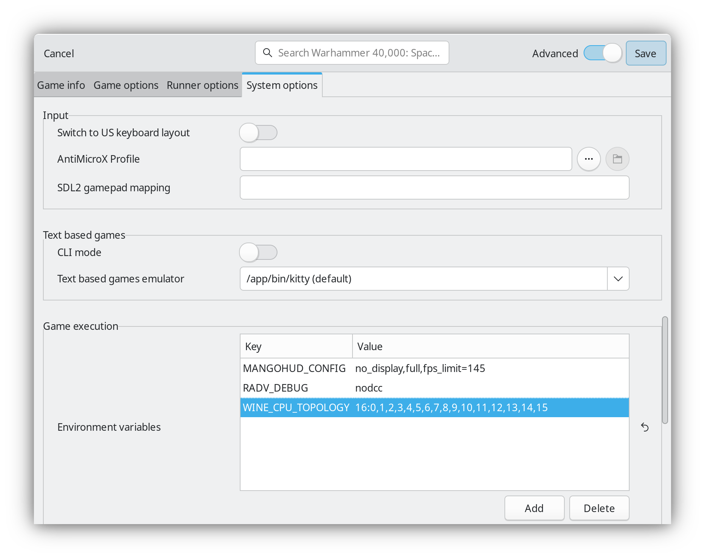

Прибиваем игру к ядрам CPU
Некоторые игры прихотливы к количеству процессорных ядер. Они могут просто не запускаться, как это происходит с Warhammer 40,000: Space Marine. Речь далее пойдёт про первую часть игры, а не вторую. Проблем со второй частью нет.
В изданиях от GoG иногда можно найти предустановленные фиксы, но не в данном случае. При старте игры появляется ошибка и предложение послать Error Report.

Проблема в том, что игра не была рассчитана на слишком большое количество ядер. Причин может быть множество, но это не тема заметки. Главное: Space Marine просто не запустится без ограничения количества физических ядер до 12.
Функция Restrict number of cores used в Lutris не помогла. Но отключение SMT в BIOS позволило запустить игру. Sidenote: SMT – аналог Hyper-threading.
Облазил ряд форумов. Для Windows можно найти хаки вроде проекта Space Marine Core Fix. Это решение подменяет ответ на запрос количества ядер, чтобы игра думала, что их меньше, чем на самом деле. Это рабочее решение для Windows.
Чтобы использовать такое решение в Lutris, можно скачать DINPUT8.dll из релизов в GitHub. Потом положить DLL в папку с игрой, а в runner options добавить DLL override вида dinput8.dll=n,b. Это стандартный процесс установки DLL.

После применения игра будет запускаться.
Для Linux есть готовые альтернативы. Одну из них подсмотрел в Issue у Proton. Решение через простую установку переменных окружения меня особо порадовало. Просто, практично, не требует подмены каких-либо DLL в установленной игре.
С Lutris мне достаточно в Environment variables добавить переменную окружения WINE_CPU_TOPOLOGY со значением 16:0,1,2,3,4,5,6,7,8,9,10,11,12,13,14,15.

Эта установка выделит игре 16 потоков. Эти потоки будут располагаться на 8-и физических ядрах процессора. Перечисление от 0 до 15 задаёт выборку конкретных потоков. Потоки 0 и 1 соответствуют первому ядру CPU. 2 и 3 второму. И т.д.
Если оставить только общее значение 16, то потоки исполнения могут быть выбраны абсолютно случайно. В моём случае это не играет значения. А если у Вас процессор с 3D V-Cache только на одном CCD, стоит явно “поместить” игру на тот самый ССD для повышения производительности.
CCD имеют сквозную нумерацию ядер. К примеру, я знаю, что у Ryzen 5950x имеется 2 ССD. Ядер всего 16. 16 ядер / 2 ССD = 8 ядер на ССD. Т.е., в примере выше я прибил игру к первому ССD, пусть и не получаю прироста производительности.
Для 7950X3D с 3D V-Cache ситуация будет аналогичной. 16 ядер и 2 CCD. Но, в этом случае, используя ту же строку, что и у меня, можно ожидать увеличения FPS.
Ну а, в итоге, игру удалось запустить, так что:
++ PRAISE THE OMNISSIAH ++